Tokyo & Hakone
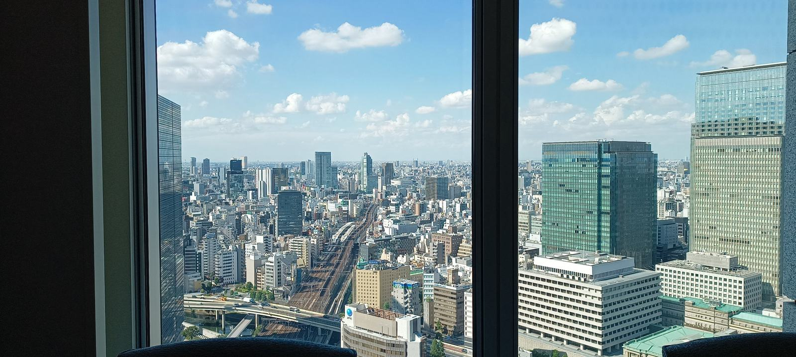
TL;DR
Highly recommend Japan as a place to visit. Hope to revisit multiple times and actually even dream of living in Japan for at least a few years some time in the future.
Expect it to be harder than most developed countries to find your way around the metro - pause, take a breath and figure out the metro maps yourself - adds to the experience. And the local food palette may be quite different from what you’re used to.
Tips
Context
I have the utmost respect and admiration for Japan, its people and the Japanese culture. Some of my raw observations below may come across negative, but they may reflect my own shortcomings more than objective truth about the people in Tokyo. I’m just trying to share my honest observations - regardless of whether they seem positive or negative.
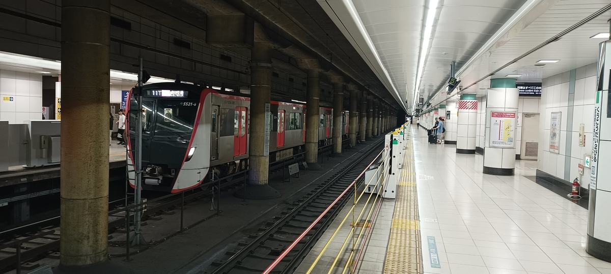
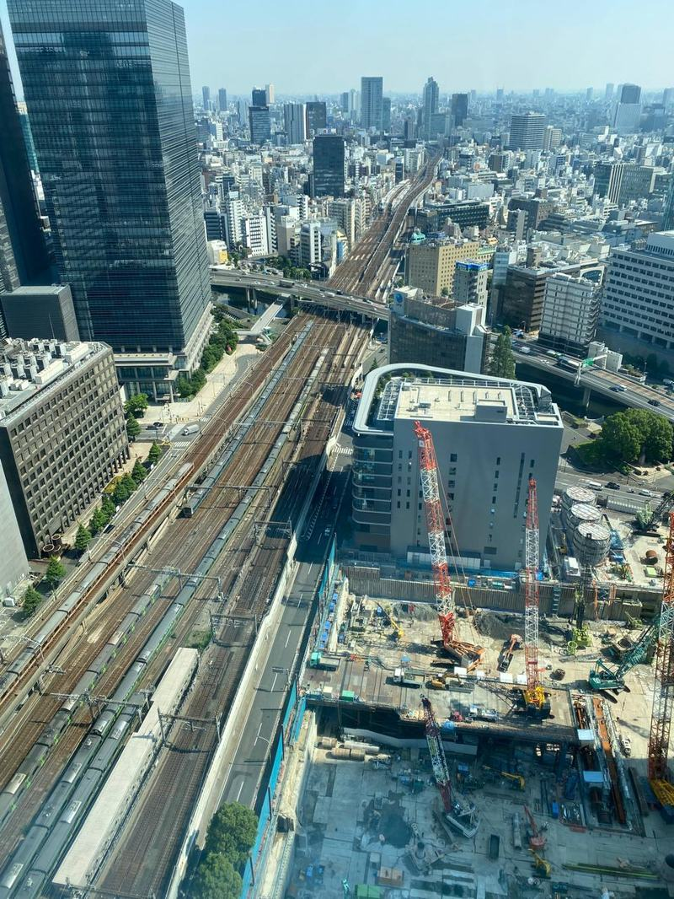
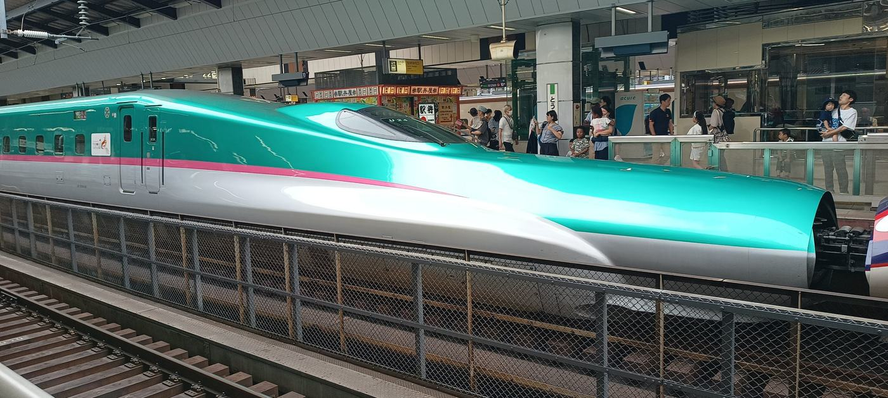
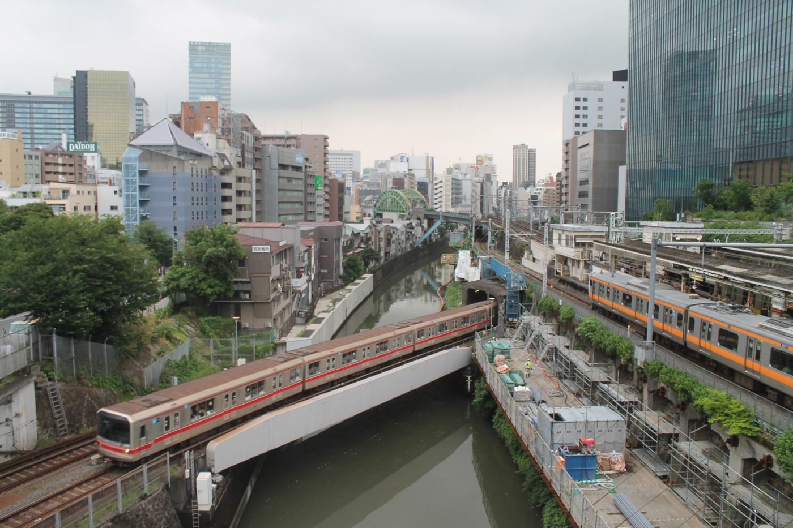
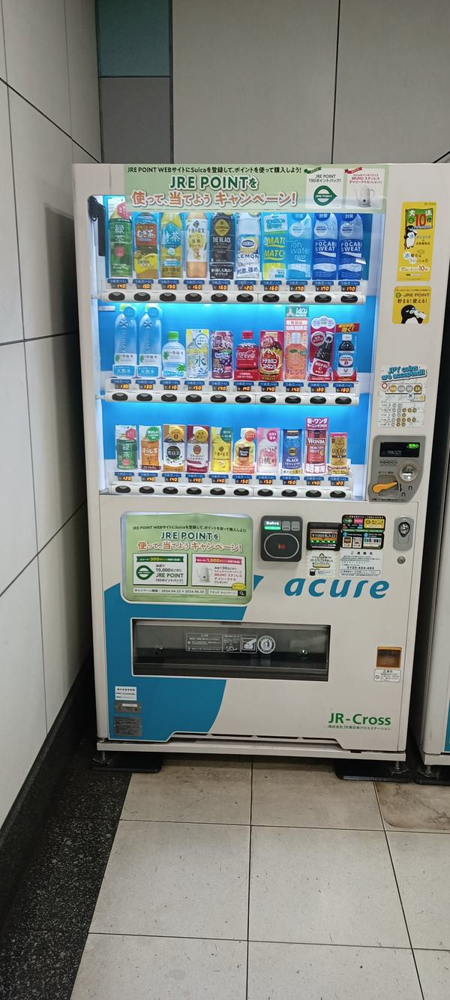
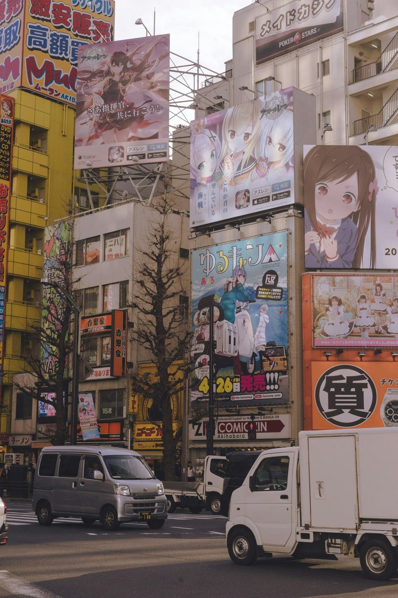
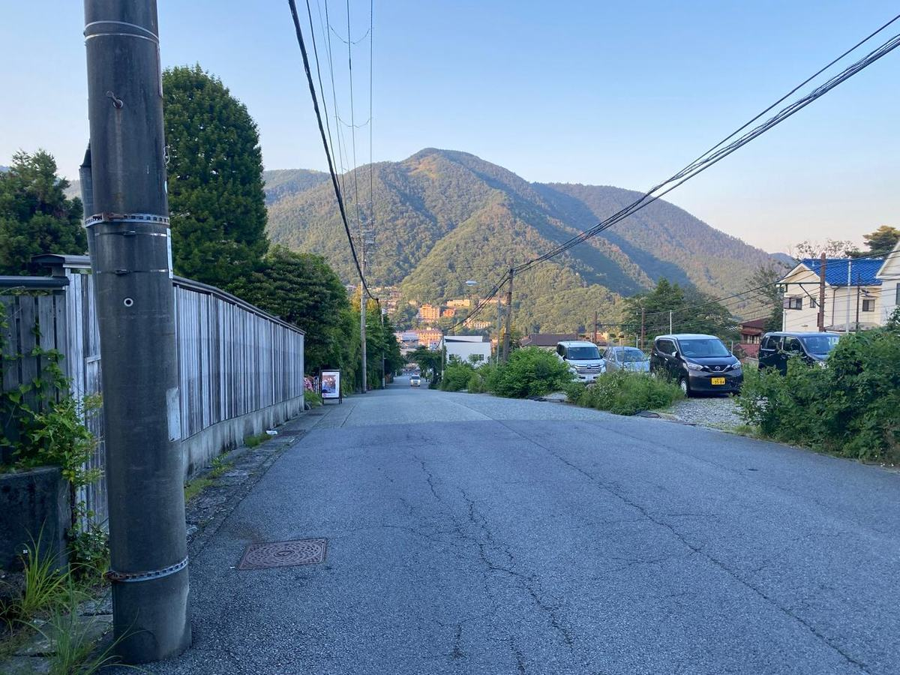
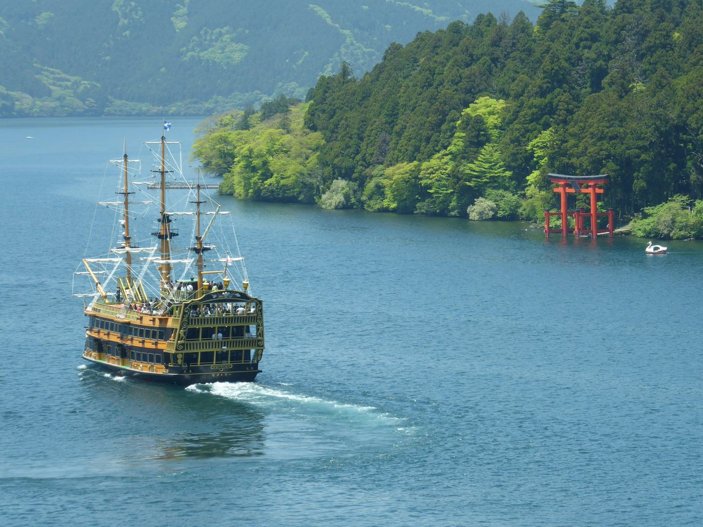
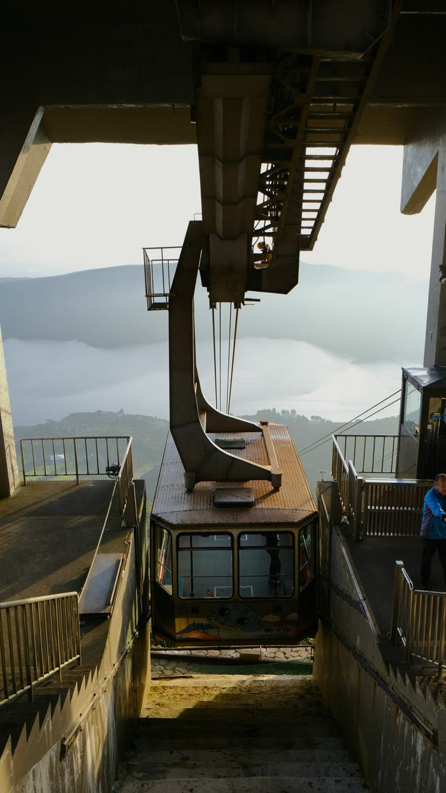
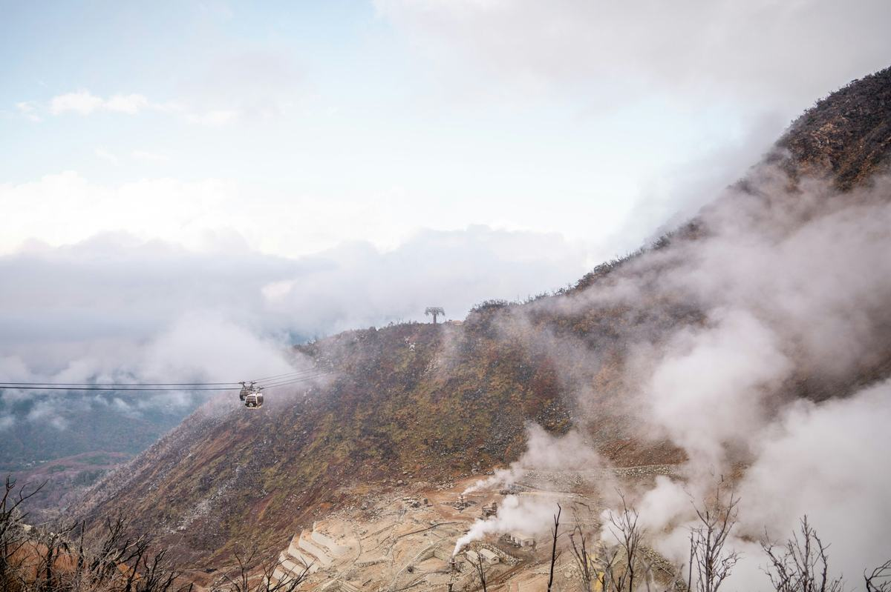
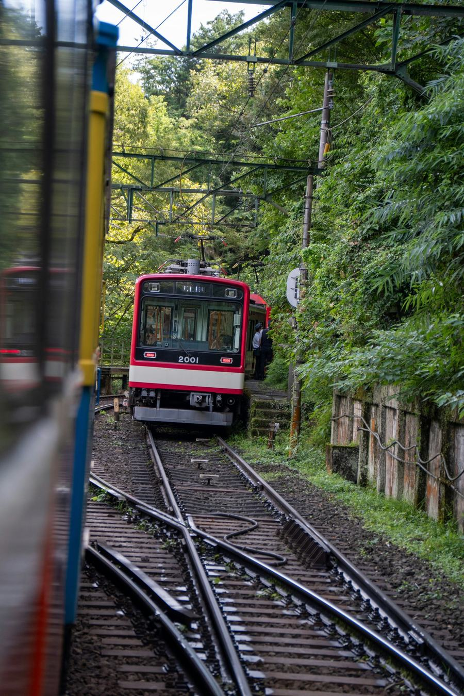
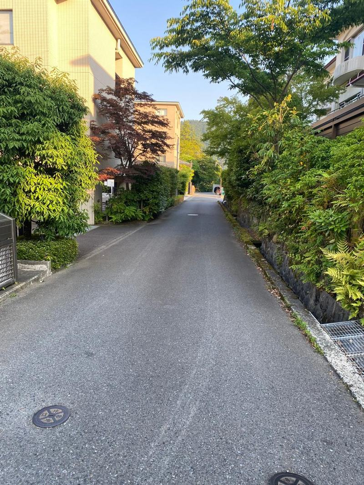
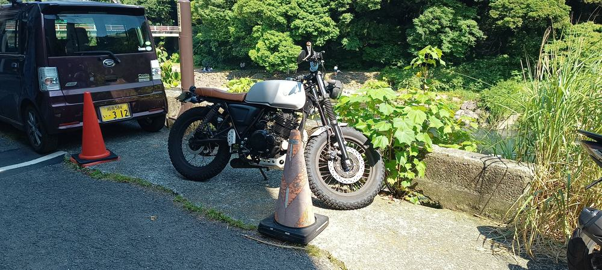